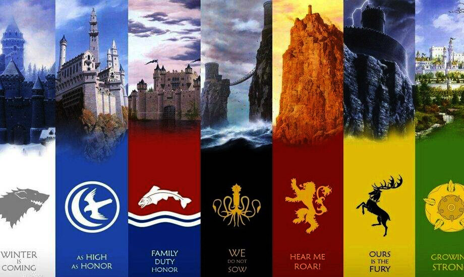

《冰与火之歌》不是一部简单的奇幻小说，它蕴含了很多方面的深刻思想。其中更有许多不为人所关注的冷知识，在此列举一二。感兴趣看看，不知道也罢~~

在《冰与火之歌》卷首艾德•史塔克所处决的守夜人逃兵是盖尔，序章中威玛•罗伊斯的随从之一。
征服者伊耿将大主教在旧镇承认他是七国之王的日子作为他的统治的开始，这也是伊耿历的元日。
蓝礼•拜拉席恩和洛拉斯•提利尔是一对恋人（只看剧集的人肯定认为这不是冷知识，实际上小说中这对BL是暗线，只有及其细微的暗示）。
琼恩•雪诺的头发颜色是深褐色，和史塔克家的传统颜色一样。
塞外的野人在孩子刚生下来时不起名。
马丁说阴影之地亚夏恐怕不会正面呈现给读者，而是通过人物回忆来展现。
相传绝境长城和临冬城都是筑城者布兰登所建。
当上总主教的人必须放弃自己的俗世名字，因为人们相信总主教已经成为诸神在人世的代言者。
多恩托尔城的乔戴恩家族其实是向《时光之轮》的作者致敬
一名多恩战士用坠落的陨石铸造了一把强力的剑，名为“黎明”，此剑成为戴恩家族最珍贵的传家宝。
赫伦堡是个被诅咒的地方，目前已知有八位城主死于非命…（目前小说中已经死了两个了，所以小指头和卢斯波顿的死，在所难免）。
卷四由“湿发”伊伦召开的选王会，是铁群岛四千年以来的首次选王会。
为瑟曦下预言的巫魔女是北境王后简妮•维斯特林的祖先。
按照多斯拉克人的习俗，卡奥们死后那些卡丽熙应被带到维斯•多斯拉克成为城市管理者，丹妮违背了这一传统。
千面屿上的每一棵鱼梁木都刻着一张脸，以纪念先民和森林之子达成的谅解。它位于河间地而不是北境。
冰火中有很多蝴蝶效应，比如，无数人的命运被贝勒•海塔尔的一个屁改变了…（大雾）
截止到卷五，提利昂•兰尼斯特是小说中POV数量最多的人物…（马丁最喜欢的角色）
马丁原本计划让卷四的事件发生在卷三之后的五到六年之后。然而，这个设想最终被放弃了。
很久以前，维斯特洛的领主们可是享有初夜权的。
无垢者每天都要更换名字，比无面者还频繁…（丹尼莉丝的无垢者军团已经废止了这个规定）
泽地人族堡灰水望是一座移动城堡。
《冰与火之歌》中的预言和梦境暗示着过去、现在和未来。
所有关于英雄纪元、黎明纪元和长夜的记载都源自数千年后修士们写下的故事。
铁王座是用征服战争中被击败的诸王的宝剑打造而成，由“黑死神”贝勒里恩喷出烈焰熔化武器。迄今所有的七国统治者都以此为王座。
"Valar Morghulis"是高等瓦雷利亚语中的一句名言，意为“凡人皆有一死”。
坦帕顿家族是史塔克家族的远亲，艾德•史塔克的祖父有一个姐妹嫁入了坦帕顿家族。
一枚金龙在黑水河之战前价值为一刀牛肉或者六只骨瘦如柴的猪崽。
射手安盖，无旗兄弟会的成员，是庆祝艾德•史塔克担任首相的君临比武大会的箭术冠军
塔斯的布蕾妮曾有过三个夭折的手足，其中弟弟加勒敦死于溺水，两个妹妹亚莲恩和亚莉姗则死于襁褓。
红堡于“残酷的”梅葛在位期间建成，完工后他杀掉了所有参与建造的人以免泄露城堡内部的秘密。
据传，罗伊斯家族的青铜铠甲拥有千年的历史，上面所刻的符咒能够保护穿着者免受伤害。
艾德•史塔克的祖父名叫艾德勒•史塔克。
王室私生子戴蒙•黑火的父母都是坦格利安家族成员。
勇士团是由来自各地的罪犯和被放逐者组成的佣兵团。
极北之地的冰封港口伊班港靠燃烧鲸油来照明。
艾林家族的成员只有在夏季居住于鹰巢城，冬天他们会移居山脚下的月门堡。
兰尼斯特家族曾经拥有一把名为光啸的瓦雷利亚钢剑。
自征服者伊耿登陆以来的三百年间，赫伦堡共由九个不同的家族占据。
小公主蕾妮丝•坦格利安为她的黑猫取名为贝勒里恩。
3000年前，詹德尔和戈尼率领大批野人穿过长城底下的通道，避开了守夜人军团的防御，入侵北境。
克里冈家族的第一位骑士被册封的原因是从狮子爪下救下了泰陀斯•兰尼斯特，并为此失去了一条腿和三只狗。
泰温•兰尼斯特的妻子，乔安娜夫人，也是他的堂妹。
塔斯的布蕾妮曾在暮之星的兵器库里发现一个绘有高个邓肯爵士的纹章的盾牌。有猜测布蕾妮是邓肯爵士的后代。
铁民的长船在一米深的水中都能正常航行。
冰与火之歌中的铠甲铸造水平与真实世界中中世纪晚期相当。
淹神信仰的历史可以追溯到安达尔人入侵之前。
亚夏古书预言，长夏之后，星辰泣血，亚梭尔•亚亥将会重生。亚梭尔•亚亥转世有几个可能的人选。
小指头不满15岁时曾为赢得凯特琳•徒利不惜与20岁的布兰登•史塔克决斗。
Fighting, GISer!
最新博文